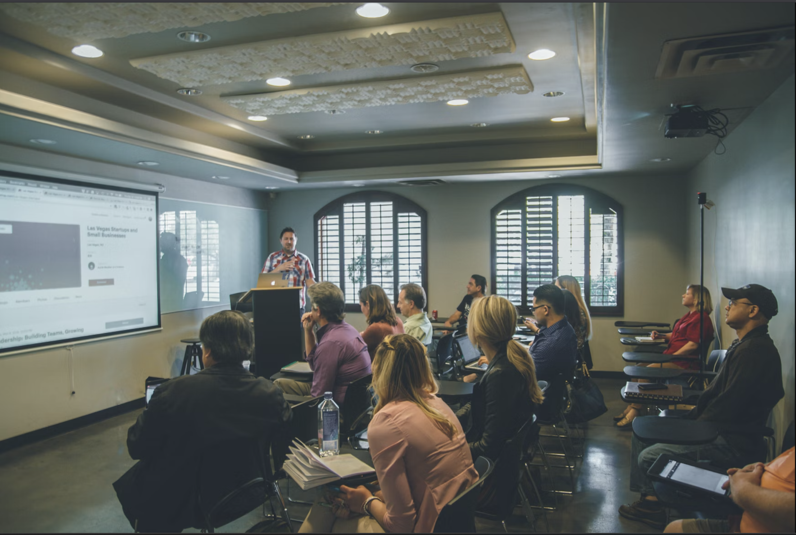
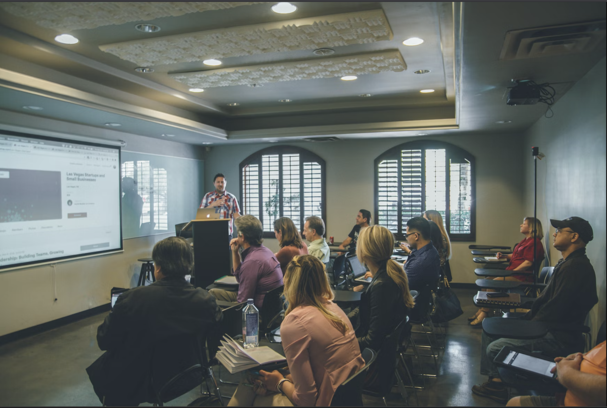

¿Quiénes somos?
Conoce la historia y el equipo detrás de la Revista Cienciometrik
Acerca de la Revista
La Revista Cienciometrik es una publicación semestral del Servicio Nacional de Aprendizaje SENA, adscrita al Sistema de Investigación, Desarrollo Tecnológico e Innovación SENNOVA.
Específicamente, nace del Centro de Comercio, Regional Antioquia, con el objetivo de difundir el conocimiento científico y tecnológico generado dentro del ecosistema SENNOVA.
Nuestra misión principal es proporcionar un espacio para la divulgación de investigaciones, desarrollos tecnológicos e innovaciones en diversas áreas del conocimiento. Si bien abarcamos un amplio espectro de temas, tenemos un interés particular en la cienciometría como una herramienta fundamental para el análisis y la mejora de la investigación.
Nuestro Equipo (Créditos)
- Subdirectora, Centro de Comercio, Regional Antioquia: Patricia Aristizabal Correa
- Editor Revista Cienciometrik: Hugo Alexander Semanate Quiñonez (Instructor Sennova. Líder Semillero de Investigación ICI. Centro de Comercio, Regional Antioquia)
- Monitores Semillero de Investigación ICI (Investiga, Crea, Innova):
- Wilson Rivera Del Castillo (Aprendiz Tecnólogo Desarrollo Publicitario. Centro de Comercio, Regional Antioquia)
- Misael Escorcia Bolaño (Aprendiz Tecnólogo Desarrollo Publicitario. Centro de Comercio, Regional Antioquia)
- Nidia Cristina Monrroy (Aprendiz Tecnólogo Desarrollo Publicitario. Centro de Comercio, Regional Antioquia)
- Equipo de codificación, diseño y edición de la web Cienciométrik:
- Marcela Restrepo (Aprendiz Tecnólogo Desarrollo Publicitario. Centro de Comercio, Regional Antioquia)
- Francisco Quiñones Maldonado (Aprendiz Tecnólogo en Análisis & Desarrollo de Software. Centro de Comercio, Regional Antioquia)
- Comité científico y editorial:
- Sebastián Robledo Giraldo (PhD. Universidad Nacional de Colombia, Sede De La Paz)
- Wilson Ramon Hernández (PhD. Servicio Nacional de Aprendizaje Sena, Antioquia)
- Rosa Quintero Amaya (M.Sc. Universidad Nacional de Colombia, Bogotá)
- Laura Marcela Gaviria Yepes (M.Sc. Servicio Nacional de Aprendizaje Sena, Antioquia)
- Nelson David Bolívar Ardila (M. Sc. Servicio Nacional de Aprendizaje Sena, Antioquia)
- Luz Carime Chía Cepeda (PHD. Servicio Nacional de Aprendizaje Sena, Cauca)
- Yaneth Fabiola Yolima Aglaya Daza Paredes (M.Sc. Servicio Nacional de Aprendizaje Sena, Distrito Capital)
- Carlos David Martínez Ramírez (M.Sc. Servicio Nacional de Aprendizaje Sena, Distrito Capital)
- Marcelo Vargas Asenjo (M.Sc. Servicio Nacional de Aprendizaje Sena, Regional Huila)
- Johan Sánchez Murillas (M.Sc. Instituto Departamental de Bellas Artes, Valle del Cauca)
Información de la Revista
Nombre: Cienciometrik
Tipo de Publicación: Semestral
Entidad Editora: Servicio Nacional de Aprendizaje SENA. Centro de Comercio.
Dirección: Calle 51 No. 57-70. Torre Sur. Piso 4. Medellín, Antioquia, Colombia.
ISSN: 2981-5533
Sitio web Cienciométrik:
https://revistacienciometrik.github.io/inicio/
Invitación a la comunidad científica
Invitamos a aprendices, instructores e investigadores del Sistema SENNOVA a ser parte de Cienciometrik, compartiendo sus valiosos aportes al conocimiento científico y tecnológico.
Postear artículo.png) 
